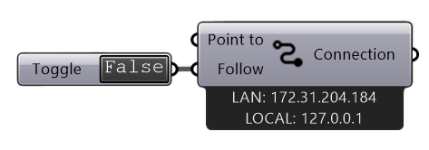
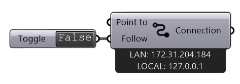
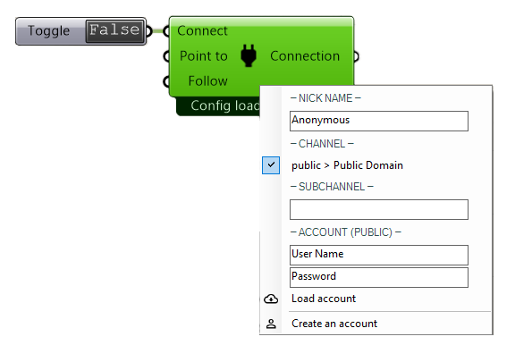

1. Connect Global & Local#
 

- There are two ways to connect:
- Connect Global:
connects to a channel that can be accessed globally
works with an account from RADii.info
- Connect Local:
can be used offline on your device or local network
is quicker since there is no need for any cloud upload
1.1. Input#
Name |
Description |
Type |
|---|---|---|
Connect |
Start the connection to the server |
Boolean |
Point to |
The Rhino view is sending a pointer |
Boolean |
Follow |
Everyone follows the Rhino view |
Boolean |
1.2. Output#
Name |
Description |
Type |
|---|---|---|
Connection |
All further components have to be connected here |
RADii components |
1.3. Connect Global:#
{kind=link}
Right click to open the menu
Nickname |
Name in the viewer for other users to recognize you |
Channel |
Select Channel from list |
subchannel |
Type subchannel name |
Username |
RADii.info username |
Password |
RADii.info password |
Load account |
Load Radii.info account |
Create an account |
Forwards you to the RADii.info website |
Note
If you are part of a group or organization, please use the respective email address to log in
1.3.1. About channels, subchannels and subsubsubchannels:#

In RADii grasshopper connect the same address can be reached by: logging in, choosing “channelname > My Domain” and then under “-subchannel-” typing the respective subchannel or subsubchannel as shown in the image below.
The way to note a channel addresses in the Viewers Connect Menu is channelname.subchannel.subsubchannel. and can be endlessly extended in this way.
Tip
How the channel sun.hs23.g1 is written:
In the RADii viewer:
sun.hs23.g1
In Grasshopper Connect select from the available Channels:
Sun > My Domain and
type: subchannel:*hs23.g1
1.4. Connect Local:#
When using Connect Local, all content is automatically sent to all open instances of the RADii Viewer on the same device as long as the Viewers Local Connection Ip Address is set to the Local IP-Adress
that is displayed below the component.
To connect locally to another editor in the same network, input the LAN: Ip Address below
the component into the Viewers Local Connection Ip Address
{kind=link}
{kind=link}
Important
For local connection to work, the devices have to be in the same network.
1.5. Videos:#
Connect - Follow video Demo